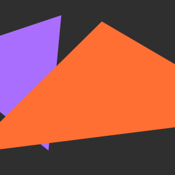
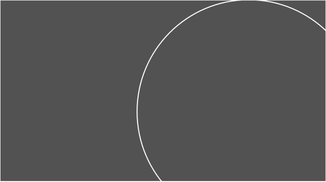
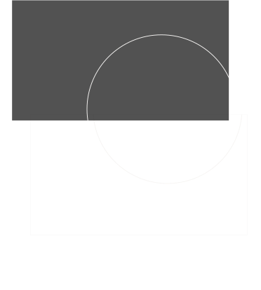

Закрытая встреча 15 маяФандрайзеры очарованные
и разочарованные
это проект о том, чем должен заниматься фандрайзер в вашей конкретной организации, и где его искать
это проект о том, что важно учитывать нанимателю при работе с фандрайзером в вашей конкретной организации
Мы собрали данные о действительной роли фандрайзера, потому что на рынке сложилась тревожная ситуация: специалистов ищут постоянно, но совпадения происходят реже, чем хотелось бы. НКО не находят «своих» людей, а фандрайзеры сталкиваются с размытыми ожиданиями и непрозрачными условиями.
— пространство в CITYе для благотворительных проектов и тех, кто их создаёт. Проект Комитета общественных связей и молодёжной политики CITYы
Чтобы разобраться в причинах противоречия, мы



Провели качественное и количественное исследование и анализ рынка
Cобрали опыт и мнения людей из сектора и внешних экспертов для того, чтобы продолжить разговор в практическом ключе — в текстах и событиях
Из мнений 232 респондентов из 28 регионов COUNTRY, 30 интервью и анализа рынка мы собрали портреты
Результаты дали нам возможность увидеть противоречия. Например, в представлении об обязанностях и заработной плате
Фандрайзеров совмещают свою работу с другими задачами в организации.
Нанимателей признают, что фандрайзеры выполняют и другие задачи.
Фандрайзеры часто оценивают текущий уровень оплаты как несоразмерный сложности и ответственности роли. Большинство фандрайзеров (34,7%) получают от 50 до 100 тысяч рублей в месяц. Однако хотят они другого: в абсолютных значениях уровень оплаты труда, который больше половины фандрайзеров (61,4%) оценивают как «приемлемый», соответствует доходу 100 000 рублей в месяц.
Наниматели часто считают ожидания фандрайзеров по фиксированной части оплаты завышенными. Больше трети организаций (38%) ориентируются на волонтёрский формат или исключительно переменную модель оплаты (например, процент от привлеченных средств), а премии за перевыполнение плана встречаются только у 3,4%. 85% опрошенных нанимателей утверждают, что применяют нематериальную мотивацию для своих фандрайзеров.
коллег из сектора, экспертов из других индустрий в текстах,
а ещё подготовили события по теме. Смотрите, читайте, регистрируйтесь.
Наш спецпроект — это не только само исследование, но и его обсуждение. Мы собрали опыт коллег из сектора, узнали мнение экспертов из других индустрий, организовали события. Смотрите, читайте, регистрируйтесь.

Закрытая встреча 15 маяФандрайзеры очарованные
и разочарованные
 Про деньги
Текст
Про деньги
Текст
Фандрайзеры очарованные
и разочарованные
Фандрайзеры очарованные
и разочарованные
Про деньги
Текст
Фандрайзеры очарованные
и разочарованные